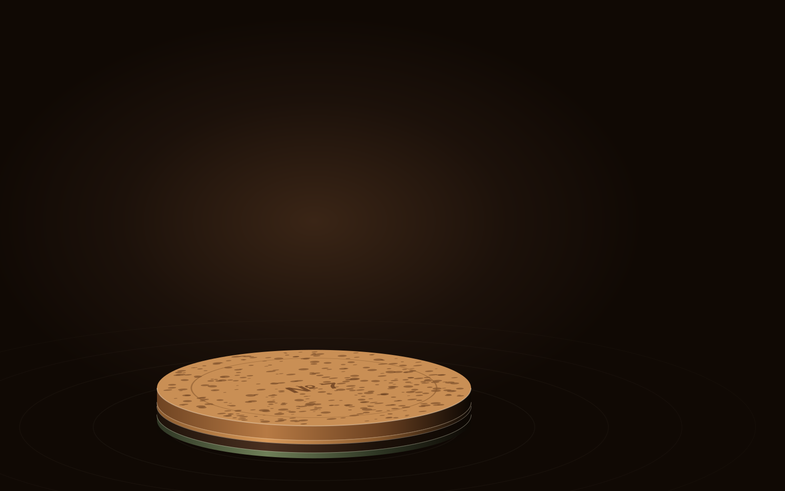

scroll · deps gsap · mobile degradar · custo alto
Quando o scroll avança, o canvas faz troca de frame pré-renderizado com scrub none, porque a câmera 3D foi gravada antes e o scroll só escolhe o quadro.

Corta. O primeiro frame é um <img> de verdade (LCP e fallback); o canvas só entra quando o motion roda. Abaixo de 768px, um frame a cada dois.
Hero de produto com giro cinematográfico que seria caro em WebGL: render exportado como 60–150 frames otimizados, trocados pelo scroll.
Página de captura leve, público em conexão ruim, ou sem frames reais (nunca placeholder). Junto de z-axis dive ou horizontal hijack.
Sem pin e sem canvas: fica o <img> do quadro e as três legendas em fluxo normal. Nenhum frame extra é baixado.